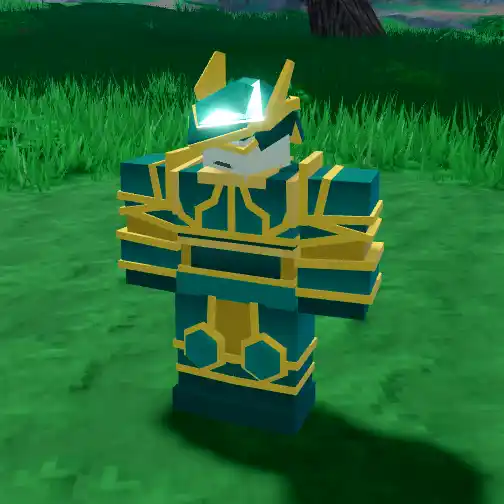
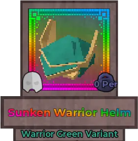
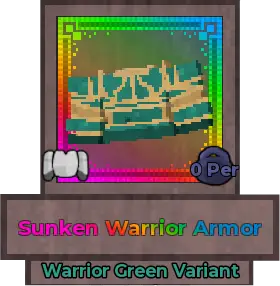
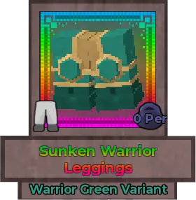
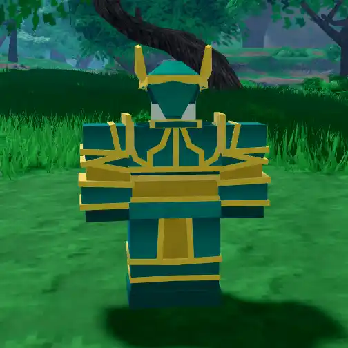
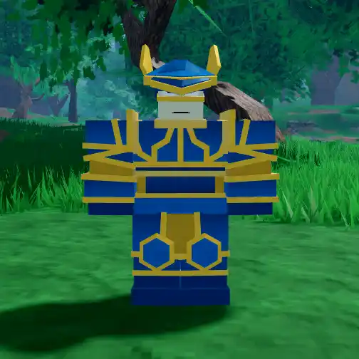
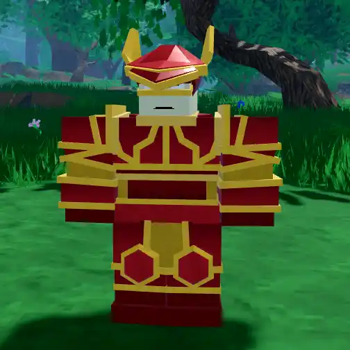
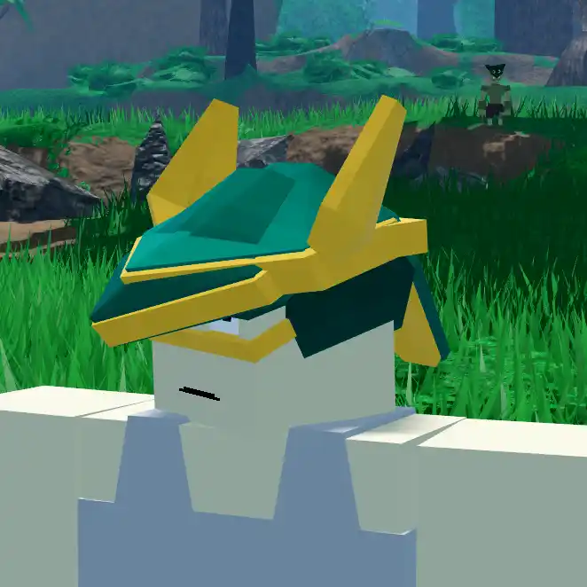
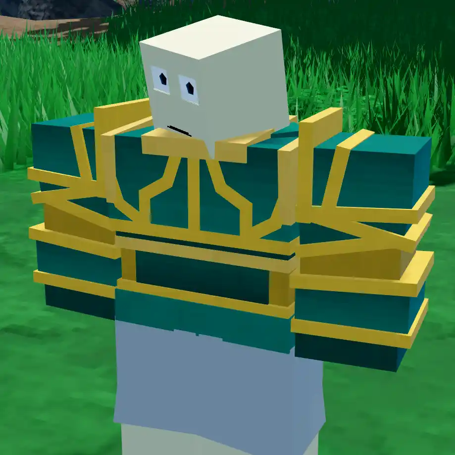
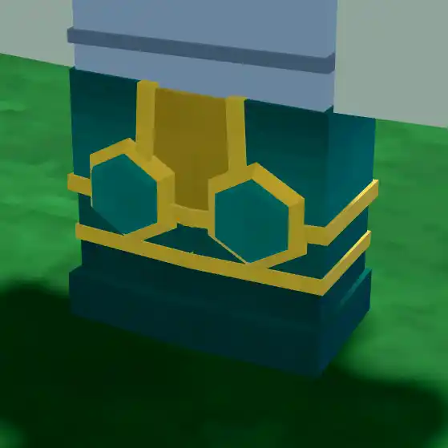

Sunken Warrior Set

Info
Slot: Head, Chest, Legs
Recolorable?: Yes
Unique Colors: Warrior Greeen
Particle Effects: None
Sound Effects: None
Owner: None
Appearance & Effects
In-game description: None
The Sunken Warrior Set is a relic armor set that consists of the Sunken Warrior Helm, Sunken Warrior Chestplate, and Sunken Warrior Legs. It is an ornate armor set with gilded trim and colored metallic plates. These plates are what change colors. The Sunken Warrior Set has its own unique color, Warrior Green.
Inspiration
The Sunken Warrior Set was inspired by corresponding Sunken Warrior Set from Arcane Odyssey.

Sunken Warrior Helm

Sunken Warrior Armor

Sunken Warrior Leggings
Image Gallery

Viewed from the back

Colored blue

Colored red

The helmet by itself

The chestplate by itself

The leggings by themselves